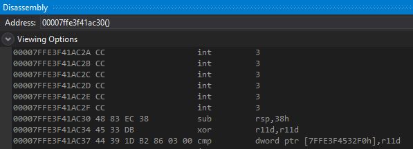
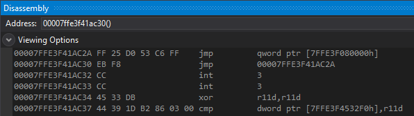
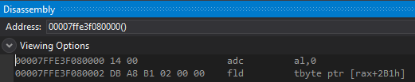
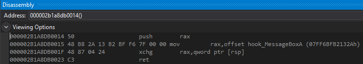
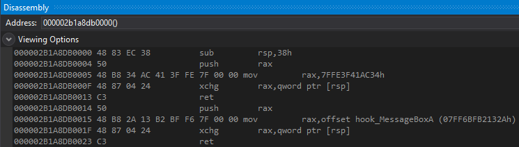

# x64 Hotpatch Hook - EB F8 to jump 6 bytes back
Apparently Microsoft says that you only need 6 bytes of free space on x64 for hotpatching.
(according to here at the
x64 Function Patching heading, can't find their source for this:)
https://www.codeproject.com/Articles/1043089/HotPatching-VERY-Deep-Inside?msg=5164819#xx5164819xxThere's a good explanation in the comments about how to do this:
https://www.codeproject.com/Articles/1043089/HotPatching-VERY-Deep-Inside?msg=5164819#xx5164819xxAnd this article explains the concept too:
https://docs.microsoft.com/en-gb/archive/blogs/freik/what-does-hot-patchability-mean-and-what-is-it-forHowever,
this technique relies on being able to find free memory within a 2gb range of the function you're patching.
(because FF 25 requries a 32bit value)
You:
• find free memory within a 2gb range of your target function
• write the 64bit address of your hook code there
• overwrite the first 6 bytes of hotpatch space with FF 25 <addr of memory in 2gb range>
• overwrite the first 2 bytes of the target function with jmp $-6 (jump 6 bytes back)
Now whenever the target function is called it will:
• jump 6 bytes back (into the hotpatch space)
• run FF 25 and read the 64bit address from the free memory
• jump to the 64bit address (which will be your trampoline)
## MessageBoxA Demo
Here's MessageBoxA before it's been hooked.
It's got 6 bytes of hotpatch space before it (actually it's ~14, but we only need 6)
Here's MessageBoxA after it's been hooked.
We've overwritten the first 2 bytes with an EB F8 to jump 6 bytes back - to
0x00007FFE3F41AC2AAt
0x00007FFE3F41AC2A is an indirect jump.
It will grab the 64bit address at
0x7FFE3F080000 and jump there.
Here's the address at
0x7FFE3F080000 -
0x000002b1a8db0014This is the address of the jump to our hook code in the trampoline.
Here's
0x000002b1a8db0014 - the jump to our hook code inside of the trampoline.
And here's the complete trampoline.
• At the start, you can see the 4 bytes we overwrote in MessageBoxA.
• Following that is a push rax; ret to reach the original function.
• And following that is a push rax; ret to reach my hook code - hook_MessageBoxA()
## Code
In this code I've also used a disassembler to grab the length of the instructions I'm overwriting
and fill out any extra instructions with NOPs.
I've used HDE - which can be found in Minhook's source:
https://github.com/TsudaKageyu/minhook/tree/master/src/hde/*
x64 hotpatch hooking
using an EB F8 to jump 6 bytes back.
6 bytes back, in the hotpatch space, is an indirect jump - FF 25 <memory within 2gb range>
Stored at the memory within a 2gb range is the 64bit address of our trampoline.
The FF 25 will jump to the trampoline, and the trampoline will jump to our hook.
Overwrites 2 bytes at the start function (EB F0).
Requires:
- 6 bytes of hotpatch space before the function (for FF 25 00 00 00 00).
- 8 bytes of free memory within a 2gb range of the target function (to store the 64bit address of the trampoline)
*/
#define _CRT_SECURE_NO_WARNING
#include <stdio.h>
#include <Windows.h>
#include "hde/hde64.h"
int(__stdcall* orig_MessageBoxA)(HWND hWnd, LPCSTR lpText, LPCSTR lpCaption, UINT uType);
int __stdcall hook_MessageBoxA(HWND hWnd, LPCSTR lpText, LPCSTR lpCaption, UINT uType)
{
printf("MessageBoxA intercepted! \n");
printf("\t text: %s \n\t caption: %s \n\t type: %d \n", lpText, lpCaption, uType);
return orig_MessageBoxA(hWnd, lpText, lpCaption, uType);
}
void* FindMemoryWithin2GBRange(void* base)
{
SYSTEM_INFO sys_info = { 0 };
MEMORY_BASIC_INFORMATION mbi = { 0 };
size_t ret = 0;
UINT_PTR mem_address = (UINT_PTR)base;
UINT_PTR min_addr = mem_address - 0x7FFFFFFF; // + 2gb
UINT_PTR max_addr = mem_address + 0x7FFFFFFF; // - 2gb
/*
Grab allocation granularity (boundary on which memory aligns, usually 0x10000 - 65kb)
and calculate start address to search from by rounding down to the nearest allocation granularity.
*/
GetSystemInfo(&sys_info);
mem_address -= mem_address % sys_info.dwAllocationGranularity;
// Search for memory below
do
{
ret = VirtualQuery((void*)mem_address, &mbi, sizeof(mbi));
if (ret == 0) // if VirtualQuery failed
break;
if (mbi.State == MEM_FREE)
return (void*)mem_address;
/*
AllocationBase points to the base address of the range of pages queried by VirtualAlloc.
e.g.
You VirtualQuery an address in the middle of User32.dll - 0x7ffecbcfacf0
mbi.AllocationBase will be 0x7ffecbc80000 (the address of User32.dll)
Subtract the dwAllocationGranulairty to find the next memory page to query.
*/
mem_address = (UINT_PTR)mbi.AllocationBase - sys_info.dwAllocationGranularity;
} while (mem_address >= min_addr);
// Search for memory above
mem_address -= mem_address % sys_info.dwAllocationGranularity; // Reset start address
do
{
ret = VirtualQuery((void*)mem_address, &mbi, sizeof(mbi));
if (ret == 0) // if VirtualQuery failed
break;
if (mbi.State == MEM_FREE)
return (void*)mem_address;
// Calculate end of queried memory region
mem_address = (UINT_PTR)mbi.BaseAddress + mbi.RegionSize;
// Add allocation granularity (-1 in case memory regions are spaced 0x10000 bytes (size of dwAllocationGranularity) between eachother)
mem_address += sys_info.dwAllocationGranularity - 1;
// Round down to allocation granularity
mem_address -= mem_address % sys_info.dwAllocationGranularity;
} while (mem_address >= min_addr);
return NULL;
}
/*
Hook a function using hotpatch space.
Requires 14 bytes of space before the function.
Parameters:
char* function - name of the function to hook
char* dll - name of the DLL where the function resides
void* detour - the function to detour to
void** p_orig - address of the pointer to the original function
Return:
Number of bytes overwritten in original function. Use this value for Unhook().
*/
int HotpatchHook64(char* function, char* dll, void* detour, void** p_orig)
{
// Grab address of target function
void* orig_func = GetProcAddress(LoadLibraryA(dll), function);
void* free_memory = FindMemoryWithin2GBRange(orig_func);
if (free_memory == NULL)
{
printf("[-] failed to find free memory within a 2gb range of: 0x%p \n", orig_func);
return 0;
}
// Disassemble instructions @ function until we have enough space for hook.
BOOL disassemble = TRUE;
void* instruction = orig_func;
int bytes_disassembled = 0;
int bytes_requried = 2;
do
{
hde64s hs = { 0 };
unsigned int instruction_size = hde64_disasm(instruction, &hs);
if (hs.flags & F_ERROR) // Failed to disassemble
return 0;
// Quit if we've disassembled enough instructions for our hook
bytes_disassembled += instruction_size;
if (bytes_disassembled >= bytes_requried)
break;
// Advance to next instruction
(UINT_PTR)instruction += instruction_size;
} while (disassemble == TRUE);
/*
Allocate trampoline space
Trampoline size needs 32 extra bytes after prologue code:
- 16 for jump to original function
- 16 for jump to hook function
*/
int trampoline_size = bytes_disassembled + 32;
void* trampoline = VirtualAlloc(NULL, trampoline_size, MEM_COMMIT | MEM_RESERVE, PAGE_EXECUTE_READWRITE);
/*
Allocate 8 bytes of space within 2gb range of original function.
Write 64bit address there (address in trampoline that contains the jump to our detour function).
*/
void* relay = VirtualAlloc(free_memory, 8, MEM_COMMIT | MEM_RESERVE, PAGE_EXECUTE_READWRITE);
DWORD64 jmp_detour = (DWORD64)trampoline + bytes_disassembled + 16;
memset(relay, 0xCC, 8);
memcpy(relay, &jmp_detour, 8);
/*
Construct trampoline.
*/
unsigned char trampoline_jumps[32] = {
0x50,
0x48, 0xB8, 0x00, 0x00, 0x00, 0x00, 0x00, 0x00, 0x00, 0x00,
0x48, 0x87, 0x04, 0x24,
0xC3,
0x50,
0x48, 0xB8, 0x00, 0x00, 0x00, 0x00, 0x00, 0x00, 0x00, 0x00,
0x48, 0x87, 0x04, 0x24,
0xC3
};
DWORD64 jmp_origfunction = (DWORD64)orig_func + bytes_disassembled;
memcpy(trampoline_jumps + 3, &jmp_origfunction, 8);
memcpy(trampoline_jumps + 19, &detour, 8);
// Write data to trampoline
memcpy(trampoline, orig_func, bytes_disassembled); // Prologue from original function
memcpy((void*)((DWORD64)trampoline + bytes_disassembled), trampoline_jumps, 32); // Jumps to original function and detour function
/*
Construct hook. 8 bytes long.
Remaining bytes filled with NOPs.
0 FF 25 00 00 00 00 jmp qword ptr <memory within 2gb range>
6 EB F8 jmp short ; jump 6 bytes back
*/
DWORD64 jmp_relay = (DWORD)((DWORD64)relay - (DWORD64)orig_func);
int hook_size = 6 + bytes_disassembled;
unsigned char* hook = malloc(hook_size);
memset(hook, 0xCC, hook_size);
memcpy(hook, "\xFF\x25", 2);
memcpy(hook + 2, &jmp_relay, 4);
memcpy(hook + 6, "\xEB\xF8", 2);
// Install hook at function
DWORD old_protect = 0;
void* patch_addr = (void*)((DWORD64)orig_func - 6);
VirtualProtect(patch_addr, hook_size, PAGE_READWRITE, &old_protect);
memcpy(patch_addr, hook, hook_size);
VirtualProtect(patch_addr, hook_size, old_protect, &old_protect);
/*
Set pointer to original function to the start of the function + bytes_disassembled.
This dodges the EB F2 at the start which jumps into hotpatch space
and instead executes the original function.
*/
*p_orig = trampoline;
FlushInstructionCache(GetCurrentProcess(), patch_addr, hook_size);
return bytes_disassembled;
}
/*
Unhook a function installed in hotpatch space.
Parameters:
char* function - name of the function to unhook
char* dll - name of the DLL where the function resides
int bytes - the number of bytes overwritten in the function
void* trampoline - pointer to the address of the trampoline space
*/
BOOL HotpatchUnhook64(char* function, char* dll, int bytes, void* trampoline)
{
BOOL ok = FALSE;
DWORD old_protect = 0;
/*
Grab address of original function,
make it writable,
restore hotpatch space with 6 0xCC,
and restore the function's overwritten instructions using those in the trampoline.
*/
void* orig_func = GetProcAddress(LoadLibraryA(dll), function);
void* patch_addr = (void*)((DWORD64)orig_func - 6);
int patch_size = 14 + bytes;
VirtualProtect(patch_addr, patch_size, PAGE_READWRITE, &old_protect);
memcpy(patch_addr, "\xCC\xCC\xCC\xCC\xCC\xCC", 6);
memcpy((BYTE*)patch_addr + 6, trampoline, bytes);
VirtualProtect(patch_addr, patch_size, old_protect, &old_protect);
/*
Free trampoline space
and flush instruction cache at original function.
*/
VirtualFree(trampoline, 0, MEM_RELEASE);
FlushInstructionCache(GetCurrentProcess(), patch_addr, patch_size);
return ok;
}
int main(void)
{
MessageBoxA(NULL, "I think I should greet myself", "Hmm...", MB_OK);
int bytes = HotpatchHook64("MessageBoxA", "User32.dll", &hook_MessageBoxA, (void*)&orig_MessageBoxA);
MessageBoxA(NULL, "Hello", "Hi #1", MB_OK);
MessageBoxA(NULL, "Hello good sir!", "Hi #2", MB_OK);
HotpatchUnhook64("MessageBoxA", "User32.dll", bytes, (void*)orig_MessageBoxA);
MessageBoxA(NULL, "Did he hear me ok?", "Hmm...", MB_OK);
return 0;
}